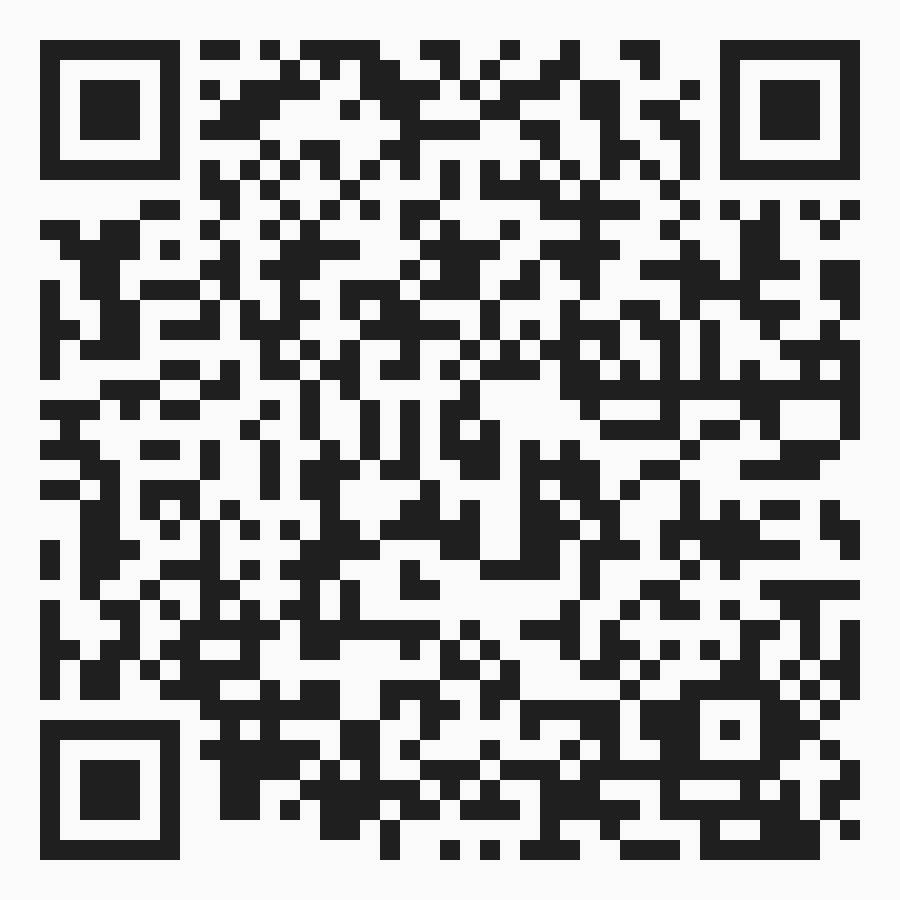

CurtinHonestly
Just finished
this unit?
Say what it was
actually like.
The next group picks their units knowing none of what you just learned the hard way.
1Scan. Sign up with your student email.
2Rate it, score the workload, say if you would take it again.
3Done in about ninety seconds. Your name never appears.
Scan with your camera

curtinhonestly.com
Independent student platform. Not affiliated with Curtin University. Reviews are posted anonymously.